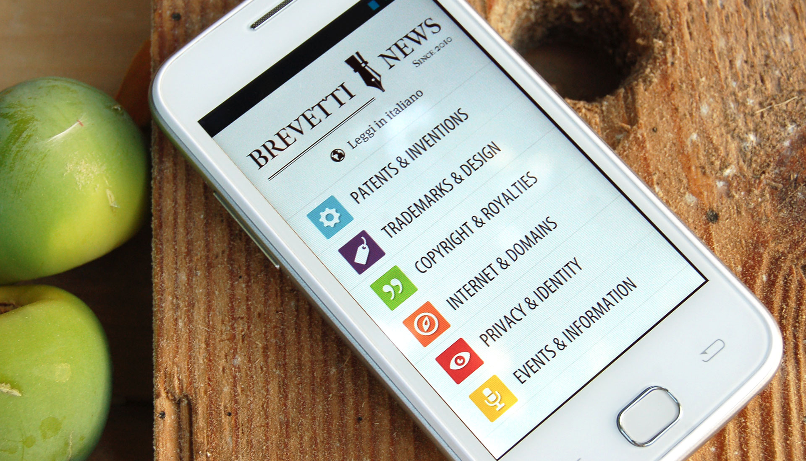
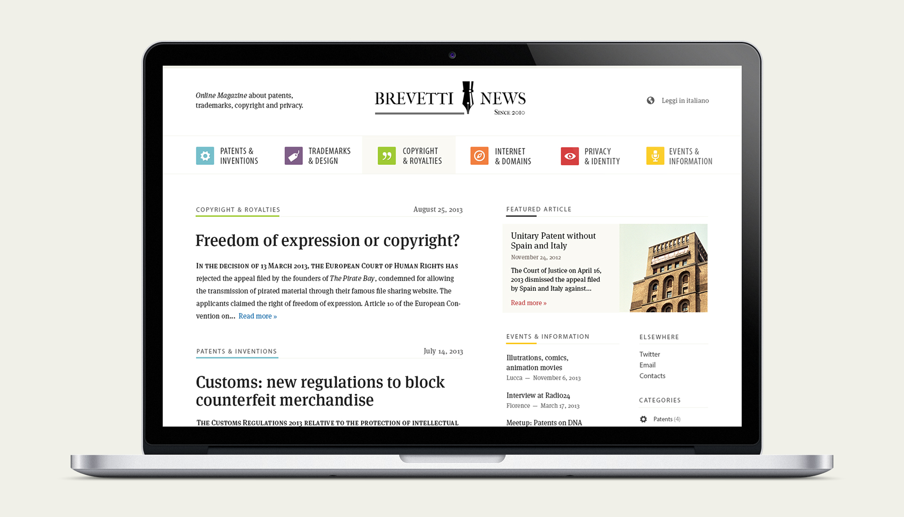
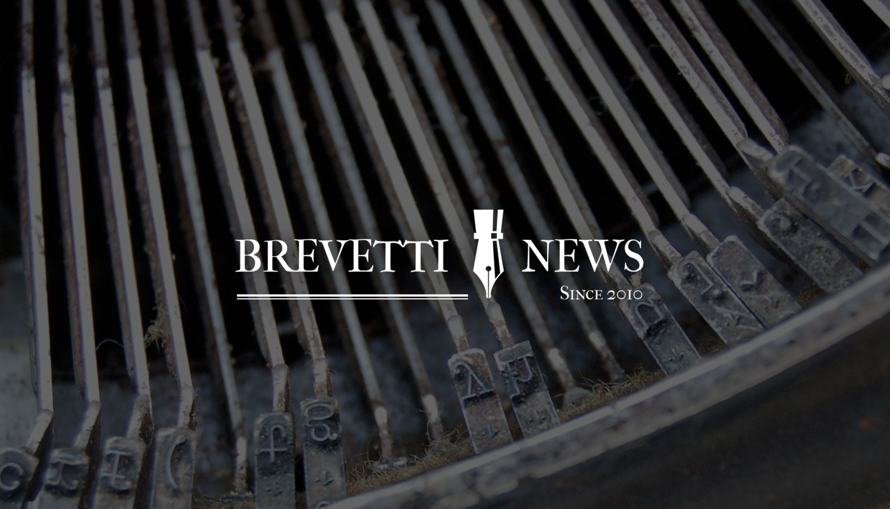
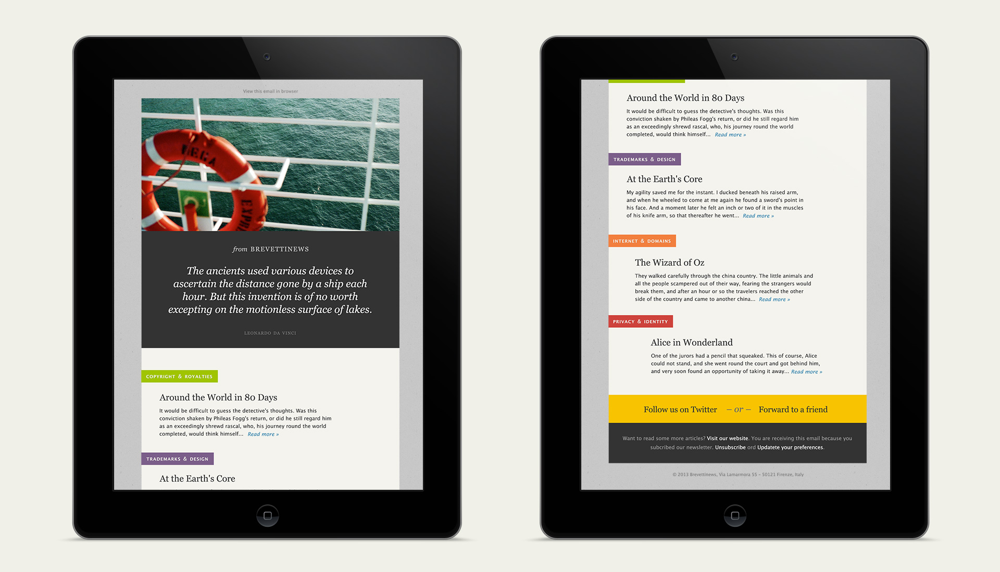

Brevettinews
A fresh look for this online magazine about patents, trademarks, copyright, privacy and Internet.
Brevettinews is an online magazine about intellectual property and innovation. The work showcased here is the second restyling I made for this magazine.
I worked with the editorial staff of Brevettinews to give the newspaper a new logo and a bright design, using colors to characterize the various sections.
I also designed the newsletter and made a custom WordPress setup that allows the editors to create newsletters that are later sent with an external service.
